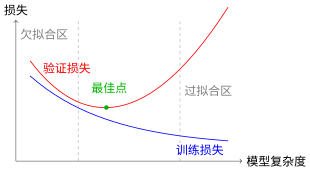
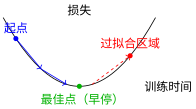

神经网络训练基础#
全连接神经网络和卷积神经网络中我们学习了如何搭建神经网络架构。但知道"建什么"不等于知道"怎么训练"——就像有了一辆车不等于会开车。本节我们将从梯度下降与优化算法和反向传播算法的理论出发，掌握让神经网络真正"学会"的实战技巧。
训练的本质：从数据到能力#
想象你在教小孩认数字。你不会只给他看一遍卡片就指望他记住，而是需要：
反复练习：同一组卡片看很多遍（多轮训练）
及时反馈：猜对了表扬，猜错了纠正（计算损失）
循序渐进：从简单到复杂，调整学习节奏（学习率调度）
防止死记：确保他理解数字的本质，不只是记住卡片（防止过拟合）
神经网络训练完全遵循同样的逻辑。梯度下降与优化算法告诉我们沿着梯度方向更新参数，但实践中还有大量细节需要把握。
核心训练概念#
在深入之前，我们需要统一几个基本概念：
Epoch（轮次）：完整遍历整个训练数据集一次。就像把整副卡片从头到尾看一遍。MNIST有60,000张训练图片，一个epoch就是看完全部60,000张。
Batch（批次）：一次更新参数时使用的样本集合。如果一次看一张就更新，效率太低；如果看完60,000张才更新，内存可能不够。Batch Size就是每批的样本数，常用32、64、128等2的幂次。
Iteration（迭代）：完成一个批次的训练。一个epoch包含的迭代次数 = 总样本数 ÷ Batch Size。
备注
MNIST训练示例
总训练样本：60,000张
Batch Size：64
每epoch的迭代次数：60,000 ÷ 64 ≈ 938次
训练10个epoch：总共迭代9,380次，更新参数9,380次
损失函数的选择#
损失函数中我们讨论了不同任务的损失函数设计。在实战中，选择主要取决于任务类型：
任务类型 |
推荐损失函数 |
为什么 |
|---|---|---|
回归 |
MSE / MAE |
直接衡量数值偏差 |
二分类 |
BCE Loss |
衡量概率校准程度 |
多分类 |
CrossEntropy |
结合Softmax，梯度更稳定 |
MNIST的交叉熵
MNIST是10类分类，使用交叉熵损失：
\(y_c\)：真实标签的one-hot编码（目标类别为1，其余为0）
\(p_c\)：Softmax输出的概率
为什么不用MSE？ 分类任务的输出是概率分布，交叉熵对这种"分布间的差异"更敏感，且避免了梯度消失问题（见反向传播算法）。
过拟合与欠拟合：学习的两种失败#
训练神经网络就像准备考试——有两种典型的失败模式：
欠拟合：学得太少#
想象一个学生只翻了翻课本，没做练习题就去考试：
训练时表现就不好（训练损失高）
考试时更差（验证损失也高）
原因：模型太简单，没能捕捉数据的基本规律
解决：增加网络深度、训练更长时间、降低正则化强度
过拟合：死记硬背#
另一个学生把所有练习题都背下来了：
做练习题时几乎全对（训练损失很低）
遇到新题就不会（验证损失高，差距大）
原因：模型记住了训练数据的噪声，而非学习通用规律
解决：使用正则化、早停、数据增强、降低模型复杂度

模型复杂度与泛化性能
图中的"最佳点"是我们追求的目标：足够复杂的模型捕捉规律，但不至于过拟合。找到这个点需要验证集——用训练集学习，用验证集调参，最后用测试集评估。
数据划分：训练集、验证集、测试集#
为什么需要三组数据？
训练集：学习参数（权重和偏置）
验证集：选择超参数（学习率、网络结构、正则化强度）
测试集：最终评估（只能用一次！）
警告
测试集的禁忌
测试集只能用于最终报告，绝不能用来调参或选择模型。否则就像考试时偷看答案——分数虚高，真实能力被高估。
MNIST的标准划分：60,000训练 + 10,000测试。实践中，我们会从训练集中分出10%（6,000张）作为验证集，剩下54,000张真正用于训练。
正则化：防止死记硬背的四种方法#
正则化的核心思想：限制模型的"记忆能力"，逼迫它学习"理解能力"。
为什么需要限制？想象一个拥有超强记忆力的学生——他可以背下所有练习题答案，考试时遇到原题全对，但稍微变化就不会。神经网络也有这种"过强记忆"的能力，特别是参数量大时。正则化就是防止这种"死记硬背"。
1. L2正则化（权重衰减）：强制"粗笔画"#
核心洞察：权重大小决定决策边界的"粗细"
想象用画笔画画：
细笔画（大权重）：可以画出非常锐利、复杂的边界，精确勾勒每个训练样本的细节——就像用0.5mm的针管笔，能画出极细的线条
粗笔画（小权重）：只能画出平滑、模糊的轮廓，捕捉大体形状——就像用毛笔，线条自然柔和
神经网络的决策边界也是由权重决定的。大权重让边界变得"尖锐"，可以"钻牛角尖"去拟合每个训练点；小权重让边界保持"平滑"，只能学习通用的模式。
为什么L2惩罚能实现这一点？#
L2正则化在损失函数中加入权重的平方和：
关键洞察：平方惩罚对大权重的"惩罚力度"远大于小权重。
权重值 |
原始损失惩罚 |
平方惩罚 |
相对增加 |
|---|---|---|---|
0.1 |
1 |
0.01 |
1% |
1.0 |
1 |
0.5 |
50% |
10.0 |
1 |
50 |
5000% |
结果：优化器会发现，与其让少数权重变得很大（承担巨额平方惩罚），不如让所有权重都保持较小。这就像税收——平方税率对大收入者更严厉，促使财富分布更均匀。
# PyTorch中的L2正则化（weight_decay）
optimizer = torch.optim.Adam(
model.parameters(),
lr=0.001,
weight_decay=1e-4 # λ = 0.0001
)
为什么有效？ 小权重的网络更"保守"，不会为了拟合某个训练样本的噪声而剧烈调整输出。它必须找到更通用的规律，才能在保持权重小的同时降低原始损失。
2. Dropout：随机"罢工"迫使协作#
Dropout 由 Srivastava 等人在 2014 年提出 [SHK+14]，是防止神经网络过拟合的有效方法。
核心洞察：随机"点名"防止依赖"学霸"
想象一个班级有50人，老师提问时总是叫同一个"学霸"回答：
学霸越来越厉害（某些神经元权重变得极大）
其他同学从不思考（其他神经元权重趋于0）
结果：班级极度依赖学霸，一旦学霸生病（过拟合到新数据），全班表现崩盘
Dropout就像随机点名：每次提问随机抽一半同学，学霸也可能被抽中休息。
后果：每个人都必须准备好回答问题
结果：知识必须在全班分布式存储，形成冗余表示
为什么冗余表示能防止过拟合？#
过拟合的本质是"记忆"——模型记住了训练数据的具体特征（包括噪声）。如果知识只存储在少数几个神经元中，这些神经元就会"死记硬背"训练样本。
Dropout迫使知识分散存储：
识别"横线"的特征不是由某1个神经元专门负责，而是由10个神经元共同分担
即使其中5个被"dropout"了，剩下5个还能大致识别横线
每个神经元都不能"偷懒"记忆特定样本，必须学习通用特征
class Net(nn.Module):
def __init__(self):
super().__init__()
self.fc1 = nn.Linear(784, 256)
self.dropout = nn.Dropout(0.5) # 50%的dropout
self.fc2 = nn.Linear(256, 10)
def forward(self, x):
x = F.relu(self.fc1(x))
x = self.dropout(x) # 训练时随机丢弃，测试时自动关闭
return self.fc2(x)
测试时为什么关闭Dropout？ 训练时的随机丢弃相当于训练了多个"子网络"（2^N种可能的组合）。测试时我们使用完整网络，相当于**集成（ensemble）**了所有这些子网络的预测，取平均——这通常比任何单个子网络更稳定。
3. 早停法：在"最佳点"刹车#
核心洞察：训练就像在山谷中行走，不要越过谷底
想象你在一个山谷中（损失函数的Loss Landscape），从高处往低处走（梯度下降）：
初期：你在宽阔的山谷顶部，大步流星地向谷底走去——训练损失和验证损失都在下降，方向基本一致。
中期：你接近谷底，步伐变小，损失下降变慢——但仍朝着正确的方向微调。
后期：如果你继续走，可能会越过谷底，走上另一侧山坡——训练损失还在下降（因为你更贴合训练数据），但验证损失开始上升（因为你开始"钻牛角尖"，拟合了训练集的噪声）。

早停法：在谷底停止，不要越过
为什么验证损失上升意味着过拟合？#
训练损失只衡量模型在训练数据上的表现。当你训练太久，模型开始"记住"训练数据中的噪声——那些只存在于训练集、不存在于真实世界的随机波动。
验证集是独立的数据，不包含训练集的噪声。所以当模型开始拟合训练噪声时，它在验证集上的表现反而会变差。
早停法的本质：在"学习真实规律"和"记忆训练噪声"的临界点停止训练。
4. 数据增强：免费的"新数据"#
核心洞察：更多数据帮助区分"本质"与"偶然"
想象你要学会"识别圆形"：
只看过1个圆 → 你可能以为"红色、半径5cm、在画面中央"才是圆的本质特征
看过100个圆（不同颜色、不同大小、不同位置）→ 你意识到"到中心点距离相等"才是本质，颜色和大小只是偶然特征
过拟合的本质是"将偶然当成必然"——把训练数据中的特定属性（如"这个位置的像素总是白色"）当成了类别的本质特征。
数据增强通过创造人工变体，让模型看到更多样的样本：
原始样本 |
增强变体 |
学到的规律 |
|---|---|---|
数字"3"在中央 |
数字"3"向左移2像素 |
位置不重要，形状才重要 |
数字"3"正常大小 |
数字"3"放大10% |
大小不重要，比例才重要 |
数字"3"竖直 |
数字"3"轻微旋转 |
方向不重要，拓扑结构才重要 |
train_transform = transforms.Compose([
transforms.RandomRotation(10), # ±10度旋转
transforms.RandomAffine(0, translate=(0.1, 0.1)), # ±10%平移
transforms.ToTensor(),
transforms.Normalize((0.1307,), (0.3081,))
])
为什么有效？#
数据增强迫使模型学习不变性（invariance）——哪些特征在变换下保持不变。模型发现：
无论"3"在什么位置，它都是"3"
无论"3"多大，它都是"3"
无论"3"是否倾斜，它都是"3"
因此，模型必须抓住本质特征（形状、拓扑结构），而不能依赖偶然特征（位置、大小、角度）。这些偶然特征在不同样本间变化，无法作为可靠的分类依据。
如何选择正则化方法？#
全连接神经网络中我们讨论了全连接网络的参数量爆炸问题，卷积神经网络中则看到CNN如何通过归纳偏置减少参数。但无论架构如何，正则化都是必需的——它是防止模型"死记硬背"的最后防线。
方法 |
使用场景 |
实现难度 |
|---|---|---|
早停法 |
总是使用 |
⭐ 最简单 |
L2正则化 |
几乎所有情况 |
⭐ 添加一个参数 |
Dropout |
深层网络、过拟合严重时 |
⭐⭐ 需调整比例 |
数据增强 |
图像、语音等数据 |
⭐⭐ 需设计变换 |
初学者路径：
第一步：只用早停法（零成本，必做）
第二步：加上L2正则化（weight_decay=1e-4）
第三步：添加Dropout（0.3-0.5）
第四步：尝试数据增强
批量大小与学习率#
批量大小的权衡#
批量大小 |
优点 |
缺点 |
|---|---|---|
小（32-64） |
泛化性好，内存占用低 |
梯度噪声大，训练不稳定 |
大（256+） |
梯度准确，可并行加速 |
可能陷入尖锐局部最优，内存需求大 |
直觉：小批量就像用少量样本"试探"方向，虽然每次方向不太准，但不容易被困住；大批量像精准测量，但可能错过更好的路径。
这与梯度下降与优化算法中讨论的"噪声帮助逃离局部最优"原理一致——适度的梯度噪声反而有助于找到更好的解。
学习率调度#
固定学习率不一定是最佳选择。回顾梯度下降与优化算法中的"下山"类比——刚开始你可能希望大步快走，接近谷底时需要小步微调。常见策略：
预热（Warmup）：刚开始用较小学习率，逐渐增加——避免初期震荡（防止"一脚踩空"）
衰减（Decay）：训练后期逐渐减小学习率——精细化调整（在谷底附近小心探索）
余弦退火（Cosine Annealing）：周期性变化——帮助逃离局部最优（周期性地"震荡"寻找更好的山谷）
# 余弦退火调度
scheduler = torch.optim.lr_scheduler.CosineAnnealingLR(
optimizer, T_max=100 # 100个epoch为一个周期
)
# 训练循环中
for epoch in range(num_epochs):
train(...) # 训练
scheduler.step() # 更新学习率
训练监控指标#
有效的训练需要实时监控：
指标 |
正常趋势 |
异常信号 |
|---|---|---|
训练损失 |
逐渐下降 |
不降或震荡 |
验证损失 |
先降后平 |
上升（过拟合） |
训练准确率 |
逐渐提高 |
停滞在低位（欠拟合） |
验证准确率 |
跟踪训练准确率 |
与训练差距大（过拟合） |
关键观察：
训练损失 \(<\) 验证损失：正常现象
训练损失 \(\ll\) 验证损失：严重过拟合，加强正则化
两者都高：欠拟合，增加模型容量或训练时间
回顾本节讨论的过拟合与欠拟合现象——这些监控指标就是诊断工具，帮助你在训练过程中实时判断模型状态。
总结：训练检查清单#
开始训练前，确认以下事项：
检查项 |
建议 |
参考章节 |
|---|---|---|
数据划分 |
训练/验证/测试 = 70%/15%/15% 或类似比例 |
本节"数据划分"部分 |
损失函数 |
分类用CrossEntropy，回归用MSE |
|
优化器 |
Adam [KB15] 是默认首选，学习率0.001 |
|
正则化 |
至少使用早停法和L2正则化 |
本节"正则化"部分 |
批量大小 |
从64或128开始，根据内存调整 |
本节"批量大小"部分 |
监控指标 |
同时关注训练和验证的表现 |
本节"训练监控指标"部分 |
本节将梯度下降与优化算法和反向传播算法的理论转化为实践——从选择损失函数、设计正则化策略，到监控训练过程。现在你已经掌握了让神经网络"学会"而不是"记住"的完整工具箱。
下一步#
掌握了训练基础后，我们将在实验对比：全连接 vs CNN中通过实验对比全连接网络和CNN的性能差异，用数据验证：
CNN的归纳偏置究竟带来了多少提升？
参数效率的差距有多大？
不同架构在MNIST上的实际表现如何？
从"知道如何训练"进化到"知道哪种架构更适合"！
参考文献#
Diederik P Kingma and Jimmy Ba. Adam: a method for stochastic optimization. In International Conference on Learning Representations. 2015.
Nitish Srivastava, Geoffrey Hinton, Alex Krizhevsky, Ilya Sutskever, and Ruslan Salakhutdinov. Dropout: a simple way to prevent neural networks from overfitting. The journal of machine learning research, 15(1):1929–1958, 2014.
贡献者与修订历史
查看详细修订记录
-
b20ef3e2026-04-28 - Heyan Zhu: docs: update pytorch practice section with detailed explanations and code examples -
59126f42026-04-26 - Heyan Zhu: docs(math-fundamentals): update content structure and add citations -
cec393d2025-12-11 - Heyan Zhu: docs: partially complete migration and restructure course materials -
0c291d72025-12-10 - Heyan Zhu: docs: restructure course materials and add new content